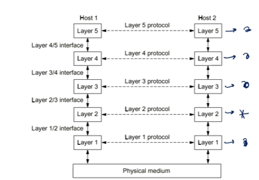

Arquitectura
Conjunto de Capas, Protocolos e interfaces que facilitan el diseño, programación, operación y mantenimiento de las tareas que maneja una red
Capas
- Mecanismos que permiten reducir complejidad, ya que cada capa tiene su función definida
- Cada una tiene un PDU
PDU
Procotol data Unit. Posee información de control necesaria.
Protocolos
Reglas o formatos para que las capas de diferentes maquinas puedan comunicarse
interfaces
Define que operaciones y servicios ofrece la capa inferior a la superior
| Capa | Funciones | PDU |
|---|---|---|
| Aplicación |
|
Mensaje |
| Transporte |
|
Segmento |
| Red |
|
Packages |
| Enlace |
|
Frames |
| Física |
|
"Bits" |
tipo de servicio
- OAC: Orientado a conexión. Aquí antes de enviar los datos, se establece comunicación con el destino
- NOAC: Se envían datos suponiendo que el destino está abierto
Tipo de comunicación
- Duplex:
- Simplex

Un tren Transporta un mensaje a traves de una Red que Enlaza 2 puntos Fisicos
MESOPOTAMIA y FB